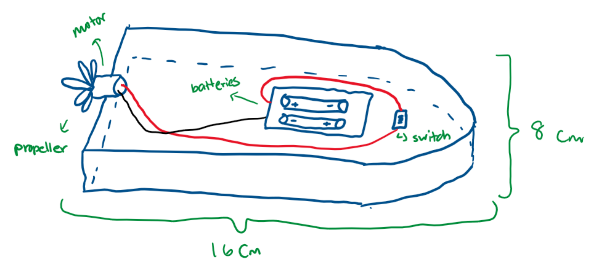
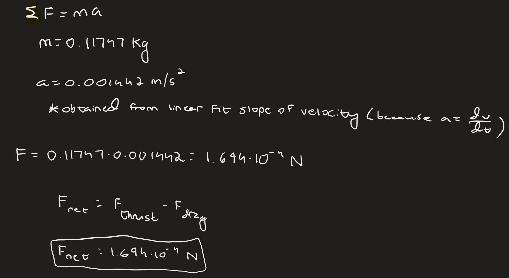

Welcome to our electric motor boat website! Continue reading to learn about our successes and failures, the physics behind our final design, and more.
Click on images to enlarge, watch embedded videos, and use our table of contents for navigation! Use a landscape screen for the best experience!
FINAL VIDEO
PROTOTYPING STAGES
Design #1: V-Shaped Styrofoam Base
Sketch
Materials
- Styrofoam
- Motor
- 2 1.5V batteries
- Wires
- Propeller
- Masking tape
Picture
Measurements and Data
- Width: 8 cm
- Length: 16 cm
- Time elapsed: 64 sec
Thought Process
With little clue where to start, we resorted to the obvious: make a design comparable to that of a real boat. The easiest material to use available in the classroom was styrofoam, so we went with that. We used a box cutter to sculpt -- or at least try to -- a block of styrofoam into a V-shaped base for a boat that could cut through water like a knife. We simply placed the motor at the end of the styrofoam with a tilt toward the water see if the effect of the wind generated against the water might be stronger.
Design #2: Lightweight "Flappy Bird"
Sketch
Materials
- Styrofoam
- Motor
- 2 1.5V batteries
- Wires
- Propeller
- Masking tape
Picture

Measurements and Data
- Width: 5 cm
- Length: 32 cm (two strips of styrofoam on front and back not shown to provide balance)
- Time elapsed: N/A (didn't make it!)
Thought Process
Even though this section is labeled "Design #2", it's hard to exactly call this a prototype. With giant wings and a miniscule body, it was no surprise that the boat never ended up moving, thus preventing us from getting an actual time. We think it's better to treat this as a "creative experiment" rather than an actual protoype. Also, we don't want to point out any names, but building a boat that looks like Flappy Bird was never going to work, Jeremy Wang.
However, the fundamental idea of the design was quite ingenius. The goal of the design was to use the propeller as a “water wheel-like” enginer to propell the boat foward. Turning the propeller sideways, this would make the rotation of the propeller push the entire boat forward, thus causing the boat to move faster. The side extensions were thus used to create balance and allow the boat to float, which still maintaining a small mass. Unfortunately, because the propeller itself is built at a slanted 45 degree angle, the design ultimately failed, as it ended up pushing the boat in the wrong direction.
Final Design: Rectangle-Shaped Styrofoam Base with Straws and Wood
Sketch (top down view)
Sketch (front view)
Materials
- Styrofoam
- Motor
- 2 1.5V batteries
- Wires
- Propeller
- Masking tape
- Duct tape
- Plastic straws
- Balsa wood
Picture (top down view)
Picture (front view)
Measurements and Data
- Width: 8 cm
- Length: 14 cm
- Time elapsed: 28.2 sec
Thought Process
Having identified the successes and pitfalls of our previous designs, we wanted to keep our final design as simple as possible to ensure that our boat went straight. The primary problem with our previous designs was that our boat kept turning to the left or right, causing significant friction with the sides of the track. We decided to use a simple rectangle-shaped styrofoam block to avoid any inconsistencies when attempting to carve out a V shape for the front of the boat. Moreover, since the bottom of the styrofoam was a little rough and the weight distribution was likely uneven, we used a layer of balsa wood taped to two pairs of plastic straws to provide balance to the boat. More on the physics behind this can be found in the results section below.
ENGINEERING PROCESS - FINAL DESIGN
Building off the concepts and build processes we learned from our previous prototypes, we set to work to build our final design.
Still believing that the v-shaped design was our best bet, we set out to cut our styrofoam base in that shape. Because we were cautious about rotation issues, we added many new components to attempt to solve this issue. First, we created a wooden base (made out of balsa wood) to attach to the bottom of the styrofoam. We thought that this would smoothen the interaction between the boat and the water which would hopefully minimize rotation. Below is a picture of us cutting out the wooden base.
The next part of the engineering process was pretty simplistic. We mainly had to rewire the circuit (see picture below) and tape the battery, motor, switch, and propeller to the boat in such a way that we would even out the boat's center of mass. This was the same procedure we executed for our first prototype, so we were pretty familiar with this step.
We had the ideas to attach straws to the bottom of our boat to help it balance. Once we added them, we started testing. Since we were at Joseph's house, we filled up a bucket with water to test it. As you can see in the following video, the boat was still rotating, despite our best efforts.
Desparate to fix the rotation issue and improve upon our original time, we realized that changing the shape of the boat's body from a v-shape to a rectangular shape would minimize rotation because we would be able to cut it more symetrically. This would stop the boat from rotating to one side as often. After testing the boat again with this new design, we were proud to see that our boat was moving in a straight line.
Finally, we had completed our final prototype. In class, we worked on adding smaller editions to our boat to incrementally decrease our timing, such as putting a sail on the boat. None of these additions improved our time, so we remained with the final prototype that is pictured below.
As a note, during 1st period on the bracket race day, we decided to apply some vasline to the bottom of the boat, which ended up reducing our time to 27.2 seconds and helped us defeat our first opponents. The vasline was effective because it acted as a lubricant, reducing the friction between the boat and the water. In other words, the vaseline created a thin layer below the boat that helped to reduce the resistance and drag, minimizing the rotational forces.
RESULTS - SUCCESSES AND FAILURES
Success #1: Plastic Straws
We found that using plastic straws was effective to balance the boat, especially considering that there was a lot of room for error since it was difficult to verify that the weight distribution was ideal. By attaching straws to the bottom of the boat, it was possible to create a counterbalance effect that would help stabilize the boat and keep it level. When the boat moved through the water, the straws created a slight lift force that countered the drag, making it easier for the boat to stay on course. In hindsight, we could have kept straws on only the left side, as the boat was going to the right and a lift force on the opposite side would have provided the best balance. Nevertheless, putting straws on both sides still improved the stability of the boat and helped it go in a straight direction.
Success #2: Rectangular Shape
When debugging our original design, we hypothesized that the reason for the boat veering to the right was the V shape. Since we didn't have professional tools, we had to use scissors and box cutters to make the V shape, which was bound to lead to a lack of symmetry in the cut. It was this realization that motivated us to use a rectangular shape for the styrofoam. This shape had a wider base and therefore a larger surface area in contact with the water, helping to distribute the weight more evenly and prevent the boat from rotating as much.
Failure #1: Use of Styrofoam
Styrofoam proved to be a very inconsistent and unpredictable material. While it serves as a solid base that would float, cutting styrofoam messed with the trajectory of the boat. Because cutting styrofoam creates uneven edges on the styrofoam, these edges meant that the boat trapped and expelled air in a non-uniform way, causing the boat to often rotate, which drastically increased the time it took to complete the full 5 meters.
Failure #2: Length of Boat
Our boat was too short, making it more susceptible to rotation. Not only are longer boats more resistant to rotation, but if and when longer boats do rotate, their edges hit opposite boundaries, couterbalancing the rotation and returning the boat back to a straight orientation. As race day came around, we observed that some of the most successful groups had boats greater in length with minimal rotation.
What We Would Change
One of the main aspects we could change about the boat is the material used to create the body. As mentioned previously, styrofoam often caused the boat to rotate because its uneven edges dealt with air resistance differently. If we used a body made out of wood or 3D-printed plastic, the air resistance force would act on the boat in a more uniform fashion. We would also increase the length of the boat to minimize the amount of rotation it experiences.
VERNIER ANALYSIS - MECHANICS
Because this project was our Magnum Opus of Physics C, we of course analyzed multiple physics concepts ranging from Mechanics to Electricity. Starting with Mechanics, we analyzed the motion and energy transfer of the boat. Check out the process below.
Raw Data
- Mass of Boat: 0.11747 kg
- Length of Boat: 14 cm
- Width of Boat: 8 cm
- Average Final Time to Go 5 m: 28.2 sec
Vernier Graph
Calculations and Analysis
Average Final Time to go 5 m
The official time that was recorded by Mrs. Roemer during our final run was 28.2 seconds. This matches up with Vernier's value for the average time, which it recorded to be 28.19 seconds.
Average Speed of Boat
We found an average speed (or velocity) by taking the derivative of our position graph on Vernier. Referencing this value from the top linear fit box, we found that the average speed of the boat was 0.2273 m/s.
Average Acceleration of Boat
We found the average acceleration of the boat by taking the derivative of our velocity graph on Vernier, since acceleration is the change in velocity over time. Referencing this value from the middle linear fit box, we found that the average acceleration of the boat was 0.001442 m/s^2.
Distance traveled
The integral of velocity gives the total distance traveled. Thus, we used the integral function for the velocity graph on Vernier to determine the value. We ultimately found the total distance traveled to be 6.535 m.
Net Force
Although the calculations show that the net force is equal to the drag force subtracted from the thrust force (from the motor), there are still more forces acting on the boat. For example, there is a gravitational force pointing downwards and a buoyant force pointing upwards, effectively cancelling out all forces in the vertical direction. All that remains are the thrust and drag force, which account for the net force.
Kinetic Energy of Boat

While we calculated the average kinetic energy of the boat, the Vernier graph shows the complete trend in kinetic energy throughout the 5m trip. Although the trend is mainly constant (since the velocity is mainly constant), there is a slight dip in the graph because our boat hit one of the rides of the pipe, causing it to temporarily slow down. This decreased the velocity for a while, thus decreasing kinetic energy.
VERNIER ANALYSIS - ELECTRONICS
We analyzed the energy transfer and dissapation of the electronic boat system as well as a few other elementary values.
Raw Data
- Voltage While Running: 2.905 V
- Current While Running: 0.625 A
Schematic

Calculations and Analysis
Resistance
Electric Power Delivered to Motor
Total Energy
Comparison of Energies
The electrical energy was much larger than the kinetic energy. This is because electrical energy is meant to be converted into kinetic energy (due to the motor enabling the boat's movement), but that doesn't fully happen. Due to nonconservative forces acting on the boat, such as air resistance or friction from the boat rubbing against the rails, some of the electrical energy was lost as heat or sound. Coupling these transfers with the small mass and speed of our boat, our boat's kinetic energy is very small, accounting for the large discrepancy between electrical and kinetic energy.
CONCLUSION
Going through multiple different designs of the motorboat, we were happy to see that our speed was more than half of what it was originally in the first prototype (56% improvement to be exact!). The changes that we added one by one, such as a new base made of styrofoam, straws at the bottom of the boat, and vaseline, all skimmed off a few seconds individually. Our final time of 28 seconds was the culmination of this work.
However, there are a few changes that could have been taken in order to improve the speed of the boat.
On a mechanical level, it would have been helpful to be able to reduce the overall weight of the boat and make the boat more aerodynamic. The square shape of the boat created a shape that increase resistance within the water, and a better solution would be to have a pointed or rounded tip that could allow for the boat to travel through water faster. Similarly, by decreasing the weight of the boat, we would be able to reduce the overall drag caused by the water. The lower the boat sinks into the water (the lower the waterline is), the surface area between the boat and the water increased, thus also resulting in more drag. Therefore, having a lighter boat would decrease the contact area between the boat and water and make the boat faster.
Another improvement that could be done is making the center of mass of the boat in more aligned with the center of the boat. Because our center of mass was slightly displaced to the right, the boat leaned right when moving, thus constantly hitting the guard rails on the side. Improving the center of mass would be able to align the boat to allow it to move in a straight line, solving this issue.
In terms of the electricity involved, one fascinating solution that we wanted to experiment with would be adding an inductor to increase the voltage of the circuit. If the inductor is first connected to the normal battery with a small resistor (1 ohm), it would be able to store current after “charging up.” Afterward, connecting the inductor’s stored current to another circuit with a large resistor, say 10,000 (ohm), would yield a voltage that is 10,000 times the original. This usage of inductors to increase voltage is often used in cars to exponentially increase the voltage of the initial battery, and we could potentially use this same concept to increase our voltage in the motor boat.
Some of the errors that we encountered throughout the data collection process had to do with the variability that existed within the different runs. Even though we tested the same design multiple times, we often found that the boat would have an error range of around 5 second; on one run, the boat could run at 27 seconds, and the next one would be 31 seconds, despite no changes made. This error range could likely be attributed to wind and the water flow. Because the experiment was conducted outside, we sometimes noticed that the direction of wind would influence the boat heavily. Additionally, since so many people were using the same experimental site, the water wasn’t completely still. The remaining movement of water caused by previous runs could have influenced the movement of boat to slow it down.
Ultimately, this experiment required problem solving and engineering that challenged us. With every new aspect of the boat we added - whether it be the sail, the motor, or a new base - there seemed to arise new problems that we struggled to resolve. Similar to the struggles we encountered in the Apollo Chronicles, we persevere forward to achieve the best time we could - hoping our motorboat can take off as successfully as the Apollo 11!
CONTRIBUTIONS
- Shiven: Engineering boat, prototype stages, physics analysis and calculations, engineering process
- Joseph: Engineering boat, prototype stages, results
- Jeremy: Engineering boat, engineering process, conclusion
Did you know...
This website was coded from scratch in HTML, CSS, and JavaScript!